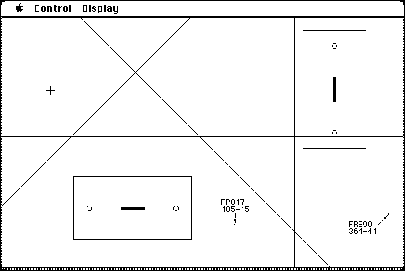

Download
PATCS-1.1.zip (info) PATCS 1.1 packaged into a zipped hfs disk image and checksum file. The disk image can be mounted with Mini vMac.
PATCS_user_manual.pdf (info) scan of user manual
copyright: Advanced Simulation Systems
mod date: Nov 22, 1988
license: free for non-commercial use
Simulates “an air traffic controller’s radar screen. You are the controller and your job is to issue commands to all planes under your control in order to let them fly safely to their destinations”. The emphasis is on realistic simulation, but it does provide a score based on how well you do your job, making it into game. Source code is available (see below).

“Pilots actually speak to you,” using Apple’s MacinTalk speech synthesizer software. A copy of MacinTalk is included, licensed for use only with Professional Air Traffic Control Simulator.
More downloads
ATC_source-1.2.pdf (info) source for PATCS 1.2, as a pdf. This previously unreleased development version is the only surviving copy of the source.
PATCS-1.2-200813.zip (info) PATCS 1.2 repackaged into a zipped hfs disk image and checksum file. The disk image can be mounted with Mini vMac. Both source and application are included. The original pdf was passed into the the open source tool pdftotext, and the result manually cleaned up (hopefully with not too many mistakes), and compiled using Microsoft QuickBasic.
V1.2_changes.pdf (info) scan of release notes for PATCS 1.2.
PATCS_1.2_parameter_file_documentation.txt (info) documentation of PATCS 1.2 parameter file.
PATCS_1.2_parameter_file_example.PDF (info) scan of PATCS 1.2 parameter file example with annotations.
:
new_features_in_patcs_v1.1.pdf (info) scan of release notes for PATCS 1.1.
Parameter_file_format_for_PATCS_v1.1.txt (info) documentation of PATCS 1.1 parameter file.
PATCS was previously commercial software. It is hosted here as freeware with permission of the author.
To contact the author, send email to this address: